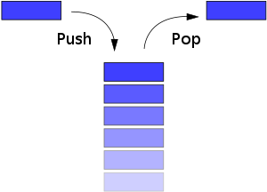

栈(Stack)
堆栈(stack)又称为栈或堆叠，是计算机科学中的一种抽象数据类型，只允许在有序的线性数据集合的一端（称为堆栈顶端，top）进行加入数据(push)和移除数据(pop)的运算。因而按照后进先出(LIFO, Last In First Out)原理运作。
操作
堆栈使用两种基本操作：推入（压栈，push）和弹出（弹栈，pop）：
- 推入：将数据放入堆栈顶端，堆栈顶端移到新放入的数据。
- 弹出：将堆栈顶端数据移除，堆栈顶端移到移除后的下一笔数据。
在python中，可用list模拟栈，append()模拟入栈，pop()模拟出栈。

例题
-
给定一个只包括 ‘(‘，’)’，’{‘，’}’，’[‘，’]’ 的字符串，判断字符串是否有效。注意空字符串可被认为是有效字符串。
有效字符串需满足：
- 左括号必须用相同类型的右括号闭合。
- 左括号必须以正确的顺序闭合。
1
2
3
4
5
6
7
8
9
10
11
12
13
14
15
16
17class Solution:
def isValid(self, s: str) -> bool:
dic={')':'(','}':'{',']':'['}
stack=[]
for char in s:
# 右括号匹配栈顶的字符
if char in dic:
# 空栈或不匹配，则输出False
if not stack or stack[-1]!=dic[char]:
return False
# 匹配成功，左括号出栈
else:
stack.pop()
# 左括号直接插入
else:
stack.append(char)
return True if not stack else False -
给定 n 个非负整数，用来表示柱状图中各个柱子的高度。每个柱子彼此相邻，且宽度为 1 。
求在该柱状图中，能够勾勒出来的矩形的最大面积。

1
2
3
4
5
6
7
8
9
10
11
12
13
14class Solution:
def largestRectangleArea(self, heights: List[int]) -> int:
stack = [0]
# 增加左右边界
heights = [0] + heights + [0]
res = 0
# 建立一个递增栈，记录index，方便计算宽度
for i in range(1,len(heights)):
# 当出现递减的数时，对栈内大于该数的数处理
while heights[stack[-1]] > heights[i]:
tmp = stack.pop()
res = max(res, (i - stack[-1] - 1) * heights[tmp])
stack.append(i)
return res 力扣（LeetCode）316. 去除重复字母
给定一个仅包含小写字母的字符串，去除字符串中重复的字母，使得每个字母只出现一次。需保证返回结果的字典序最小（要求不能打乱其他字符的相对位置）。
1
2
3
4
5
6
7
8
9
10
11
12
13
14
15
16class Solution:
def removeDuplicateLetters(self, s: str) -> str:
stack = []
existed = set()
counter = {}
for c in s:
counter[c]=counter.get(c,0)+1
for c in s:
if c not in existed:
# 后面还有这个数，我们才能放心的删除
while stack and stack[-1] > c and counter[stack[-1]]:
existed.remove(stack.pop())
stack.append(c)
existed.add(c)
counter[c]-=1
return ''.join(stack)其实也是建立了一个递增栈，但是这里需要满足所有的字母最后只出现一次。
队列(Queue)
队列(queue)，是先进先出(FIFO, First-In-First-Out)的线性表。在具体应用中通常用链表或者数组来实现。
操作
队列只允许在后端（rear）进行插入操作，在前端（front）进行删除操作。
在python中，可用list模拟简单模拟队列，append()模拟插入，pop(0)模拟删除。或使用deque。
1 | from collections import deque |
队列的实现分为顺序存储结构和链式存储结构，前者基于数组实现，后者则实基于单链表。简单来说，顺序储存结构在进行队列删除操作时会留出空的储存空间，最后导致假溢。解决办法是引入了循环向量这个概念，也就是把队列的头尾相连接并且使用顺序存储结构进行数据存储的队列，这时队列称循环队列。
例题
力扣（leetcode）622. 设计循环队列
1
2
3
4
5
6
7
8
9
10
11
12
13
14
15
16
17
18
19
20
21
22
23
24
25
26
27
28
29
30
31
32
33
34
35
36
37
38
39
40
41
42
43class MyCircularQueue:
def __init__(self, k: int):
self.size = k
self.cq = [0]*k
self.eq = 0
self.dq = 0
self.count = 0
def enQueue(self, value: int) -> bool:
if self.count == self.size:
return False
self.cq[self.eq] = value
self.eq += 1
if self.eq == self.size:
self.eq = 0
self.count += 1
return True
def deQueue(self) -> bool:
if self.count == 0:
return False
self.dq += 1
if self.dq == self.size:
self.dq = 0
self.count -= 1
return True
def Front(self) -> int:
if self.count == 0:
return -1
return self.cq[self.dq]
def Rear(self) -> int:
if self.count == 0:
return -1
return self.cq[self.eq-1]
def isEmpty(self) -> bool:
return self.count == 0
def isFull(self) -> bool:
return self.count == self.size这里每当头尾指针溢出（也就是等于k时），将其置为0。当然也可以一直使用
self.eq%self.size和self.dq%self.size作为指针。
力扣（leetcode）102. 二叉树的层次遍历
1
2
3
4
5
6
7
8
9
10
11
12
13
14
15
16
17
18
19
20from collections import deque
class Solution:
def levelOrder(self, root):
levels = []
if not root:
return levels
level = 0
queue = deque([root,])
while queue:
levels.append([])
level_length = len(queue)
for i in range(level_length):
node = queue.popleft()
levels[level].append(node.val)
if node.left:
queue.append(node.left)
if node.right:
queue.append(node.right)
level += 1
return levels当然如果不分层的话会更直观：
1
2
3
4
5
6
7
8
9
10
11
12from collections import deque
def levelOrderTraversal(root):
res=[]
queue = deque([root,])
while queue:
node = queue.popleft()
if node.left :
queue.append(node.left)
if node.right:
queue.append(node.right)
res.append(node.val)
return res